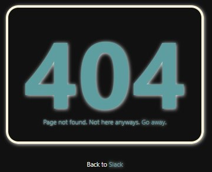
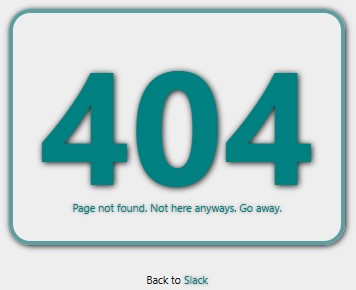
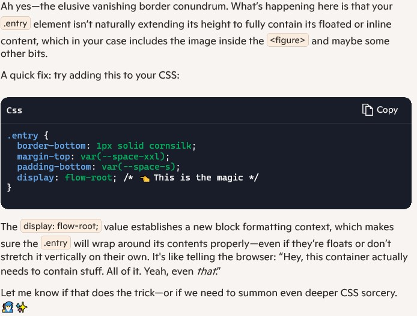

A personal blog about getting away from bosses and the people who think they own my time. I'm trying to start something in media, but I honestly have no clue if I'll stick with it because, I suck at this kind of stuff. These are my thoughts and opinions, nothing more.
Monday, June 16, 2025 12:23
A picture of my setup, right now
Well, this is my first post. I don't know what to say, except that this will be archived into the proper month's page before anyone sees it. That's okay, because I am just looking to get started and if I don't type something now, I probably never will. I am still building the blog, but am keeping it really simple and clean looking. No fancy crap. In fact, right now there is only one line of JavaScript that puts the current date in the top right of the page. I couldn't live without that. As I sit right now, I am copy pasting this shit into archives, or at least I will at the end of the day. I will build things as I go to make life easier. Also, I am going to try to integrate one picture a day into this blog, to give it a bit of color. I have a few other sites and a business machine to finish building, but it all costs money. I need a new laptop, too. Fuck.
Tuesday, June 17, 2025 8:50 AM
I meant to type something last night. It was a long day at work, so I didn't. I don't know what a blog is or why people do it or why I should do it, other than they are relatively easy to build and good for practicing website design. Anyways, I need to finish up this site. Whatever.
Tuesday, June 17, 2025 12:08 PM

My 404 page, the blurriness is intended
Welp, my computer just crashed. Luckily, I save everything constantly. I don't have a backup yet, but maybe I should work on that. Or, at least get this shit on Git. Man, I'm lazy. It's a fucking wonder I've gotten this far. Also, fuck Windows. I do have a better time using a Linux Dist, but right now, it's just easier to get shit up and rolling on Windows. Maybe it's all in my head. I forget what I was even going to work on. I just finished building the 404 page, so I guess I'll check on that and make sure it still works... in a bit. I took this crash, as I do all crashes, as a suggestion to take a coffee break. Man, I love being my own boss! I just wish I were reliable, lmao! I need a new laptop. The battery is shot in my current one, so I can't take it with me. Plus, nothing is on GitHub yet, so I can't push posts anyway. That'll be my goal for tomorrow; get this shit ready. I would like to be able to post all of my stupid thoughts throughout the day, as soon as they happen. It feels more authentic that way. My job right now is DoorDash, so I have a lot of stupid thoughts. It's a dumb job. Nobody who uses it are happy. The people ordering aren't happy, the people delivering aren't happy, the stores aren't happy, and the owners of the site aren't happy. Nobody is happy about it. It exists only because it is necessary. It has one benifit for me, that caused me to give up a job making nearly 100k a year. I. Control. My. Time. I will get into it later, but that was important form me. For now, just realize, I drove truck for nearly 20 years. And, while a lot of it was a good experience, I got to have almost none of my time. I want to learn a skill that will give me the rest of my time (as little as is left, anyway). Software is that skill, but I'm 45 and my brain is less plastic than when I was younger. I need more time for learning. That's where DoorDash came in. It sucks, I had to sell ALL of my toys to initially make ends meet, and it's been 4 years or so of going back and forth on what I should study. Feeling like an imposter; a fucking loser. Who does that? Quit a 100k a year job to go make 35k a year in the hopes that my brain can still brain properly. I can't see the light at the end of the tunnel yet, but I really think this blog will help me get there. Think I'll post a pic of my 404 page. There is a light version for those masochists who keep their screens in light mode. Maybe on my next update today, I'll snip it, so you can see both. Alrigtht, I fogot what I was going to do with this. Dishes need done before work, so I guess I'll call it a day here. I'll try and post tonight. Git tomorrow, ffs. And fuck Windows.
Wednesday, June 18, 2025 12:01 PM

The light version of my 404 page
Hello again. I don't have anything to say, except that I didn't post last night and I overslept this morning. To top it off, I decided to drink coffee and watch YouTube documentaries this morning... So now, I don't have much time to work. But, luckily I have been able to find a new bug in the CSS as I type this post. So, it gives me something to talk about. I use a border-bottom in CSS instead of a horizontal-rule in the HTML, so that I have better control over where it goes. Apparently, I fucked up, because it won't go below the bottom of the image until the text I type is long enough. And this, even though all are contained within the article tag and therefore class that describes the behaviour. Longshot, but I tried moving everything into a div, kinda figured it wouldn't work since an article is basically just a semantic div. Maybe copilot knows. Although, yesterday I asked it to proofread some stuff and it just made shit up. I am dead serious. I told it that I can't find the typos in question and it basically just said that I was right and those weren't there, lol. Why would it even be able to do this? Anyways, back to the h-rule problem...

Copilot's answer was fucking great!
Less than 30 seconds later: Man, it can be quirky some times, but AI is the shit! If I asked this question on Stack Overeflow, I would probably be yelled at and told to go learn how to do it BEFORE I come there and ask how to do it. Seriously. If AI replaces one thing, I hope its assholes like that. With AI I ask and I shall recieve. I have literally read about 1500 pages in CSS and HTML and watch countless hours of YouTube and not once was "display: flow-root;" mentioned. Boom! And now, that will be in my brain for the next time. Let's be clear, I don't use AI to straight up build anything, but it (in spite of just straight up lying sometimes) is better than any book, teacher, video, or class that I have ever had. I wish I had used it more when I was learning C and C++. I might have already made a real product by now. It answers questions without hesitation or irritation. And most of the time, as long as the question is simple, it is accurate. I think that is the perfect use for it. It saves time from going through the books, finding the topic in the index, finding the chapter, trying to speed read to the topic at hand, and still not knowing if it's correct because there's no real feedback. But, just for show, I'll snip what Copilot wrote. Man, we are living in fucking good times. Fucking good and terrifying times. Alright, I have to go do something about having colors all over the place. They could just be set up as CSS variables. Then, I think I said something yesterday about Git. I still have to work, ha.